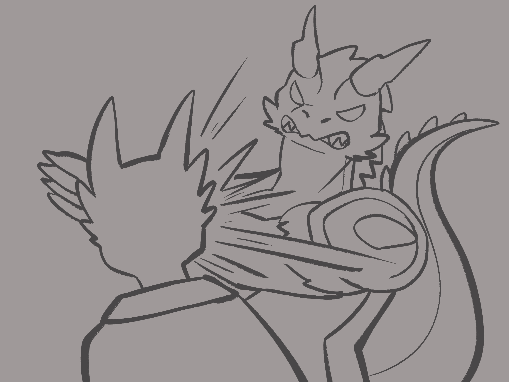

Chapter 3: whodunit
Heir to Rathanad


Heir to Rathanad
15049.05.03
瑟拉蒙・艾瑞利斯，阿龍的叔叔，在案發現場陪伴著冒險者們。艾瑞利斯家族的其他成員，則各自回到房間休息。敞開的大門，走入了一名熟悉的身影。是龍人型態的哈雷爾。
哈雷爾向費洛登致上了他的哀悼，也提議，讓冒險者們協助調查，並於今日日落前定奪這樁事件的幕後黑手究竟是何人，作出審判。眼看哈雷爾虛假的愁容，阿龍內心憤恨不已，但此刻，他已在身遊戲中，不是該發脾氣的時間。
「如果失敗了，你會後悔這一切。」那是龍型態的哈雷爾，也就是米札哈里爾曾對阿龍說過的話。
瑟拉蒙提供了他與已故的哥哥費洛登在家裡的辦公室，讓冒險者們當作審訊室。同時，他也授權他們能在這個家裡任何房間自由活動。冒險者們開始分頭進行調查。
雷亞先到了馬棚，以德魯伊的能力化身成一匹馬，和昨晚被羅羅牽來的綠先生的馬溝通，得知昨晚曾經有巡邏隊經過。
鑰、羅羅和瑪莉貝爾到畫室搜集線索。如第一眼所見，在阿龍父母深厚的那幅畫與他們的死狀相似，畫風很顯然與阿龍的堂妹奈梨紗一致。刺在兩人胸口的匕首十分精準，並未造成太大的傷口，血液也沒有到處噴濺，只有向下流淌到死者的腿上而已，地面是乾淨的。
鑰以自己的經驗判斷，案發時間應該是昨晚 10:00 到凌晨 2:00 之間的時間。
瑪莉貝爾注意到畫桌上有兩個茶杯。羅羅拿起來檢視，發現除了茶漬外，還有可疑的白色粉末。瑪莉貝爾輕輕蘸了一點起來抿一口，有點麻麻的味道。
阿龍、毛毛和綠先生待在審訊室，瑟拉蒙是他們第一個審問的對象。他說明自己在晚餐後，都在這裡（即辦公室）忙碌，睡前才回到房間，當時他的太太艾內莫已經睡了。
冒險者們一致覺得奈梨紗是嫌疑最大的，畢竟他是最常出現在案發現場「畫室」的人。瑟拉蒙帶著大家到奈梨紗的房間。在奈梨紗的同意下，毛毛進到房間內進行調查，看到房間內有放部分的畫具。因為奈梨紗的房間太小，阿龍、毛毛、雷亞和綠先生一起將奈梨紗帶回審訊室去問話。
同一時間，鑰、羅羅和瑪莉貝爾來到房子深處的書房調查。羅羅找到了一本與「記憶」有關的魔法書，甚至有一頁有個非常小的摺痕。那一頁是「竄改記憶」的魔法。鑰也找到了一本神話故事書，裡面有提到和奈梨紗的畫作十分相似的故事：龍，都是成對出現的，而在他們死前，他們會與另一半成對盤旋在空中，最後消失。
書房緊密排列的書架用力一推，竟然是可以動的。冒險者們合力推動它，竟看見對面是另一個房間：阿龍的堂弟維瑞克坐在床上，眼睛瞪得老大。維瑞克坦承這是他自己建的密道，雖然書房就在他房間隔壁，但只要透過密道，他連房間門都不用出去就能進到書房，多麼方便啊！
阿龍、毛毛、雷亞和綠先生詢問奈梨紗前一晚的行蹤。奈梨紗表示自己晚餐後便到畫室去，中間一度跑去找他弟弟，然後又回到畫室去了。大約晚上十點左右，他的伯伯費洛登和伯母瑟萊拉來到畫室，於是他便去備茶。奉完茶後，他便離開畫室了，也不清楚伯伯、伯母在畫室待多久以及做了什麼事。奈梨紗也表示平常都是他和弟弟維瑞克兩人輪流奉茶，昨晚也是如此。
鑰、羅羅和瑪莉貝爾和維瑞克詢問，得知他昨天晚餐後不是在自己房間，就是在書房，他也承認自己有在看那本關於記憶魔法的書。維瑞克也提到他曾對奈梨紗施行過竄改記憶的魔法。這點讓冒險者們提高了注意。
午餐時間，冒險者們與艾瑞利斯一家在餐桌用餐。哈雷爾再度出現，加入了餐會。冒險者們對於哈雷爾為何可以這麼隨意地進出艾瑞利斯家，甚至加入午餐，感到疑惑。瑟拉蒙表示哈雷爾是這裡的士紳，他願意來訪，是很值得開心的事。
阿龍的堂姐瑟拉斯的眼神和前一天一樣充滿敵意。坐在他的正對面，阿龍也很不放鬆。插在他父母遺體上的兩把匕首十分精緻，上面還有他們的家徽。瑟拉斯是這家人裡唯一的習武之人，也據說非常喜歡武器，因此這兩把匕首很有可能就是來自他的。瑟拉斯答應在午餐後，讓冒險者們來他的房間看他的武器庫。
午餐期間，哈雷爾不斷以心電感應詢問阿龍的狀況。阿龍表示大家都掌握了部分的資訊，但沒有足夠能拼起所有拼圖的方法。哈雷爾建議阿龍去刺激他們的情緒，讓艾瑞利斯家的人被激起後說出他們內心真正的想法或事實，而不是像現在，大家都只是在說些場面話而已。
午餐後，瑟拉斯領著阿龍，一起來到他的房間，並把門關上。他坐在床上，指著一座大衣櫃，讓阿龍自己打開。裡面沒有衣服，全是武器。掛大衣的空間，放滿了長型的近戰武器，擺得整整齊齊的；底下的抽屜則是放了各種小型的武器，如短劍、匕首、飛鏢等。而另阿龍感到注意的是，比起長型的武器，小型的武器在抽屜內竟然擺得非常混亂，就像是被翻攪過一樣。瑟拉斯也說大家的房間通常都是開著門的，家人之間沒什麼應該互相提防之處。
在這個私下的空間，瑟拉斯也坦承自己的臉雖然臭、話雖然難聽，但他並沒有惡意，這只是他習慣的表達方式而已，希望阿龍不要因此覺得難受。眼看堂姐複雜的表情，阿龍好像稍微能理解一點點。另外，瑟拉斯也說道，自己也是城鎮的守衛隊，平常每天晚上每小時都會外出巡邏，但在昨晚的巡邏過程中，並未發現任何和作案有關的事蹟。
其他冒險者們則利用這段時間，在餐桌和阿龍的嬸嬸艾內莫問話。他們得知艾內莫平常有失眠的問題，因此很早就會先服用安眠藥，讓自己能睡久一點。而他的安眠藥都是自己磨製的，平常都存放在廚房的櫃子裡。雖然他沒有和任何人提出過這件事，但也沒防著讓大家拿不到。
回到餐桌，叔叔瑟拉蒙詢問阿龍是否應該要讓大家一樣各自回房間，要詢問任何人時，再去找他們？冒險者們則提出了要大家待在餐桌的請求，以免有人落單後又慘遭毒手。
冒險者們決定透過「誠實之域」的魔法，突破艾瑞利斯一家的心房。他們主要針對最可疑的奈梨紗和掌握了「竄改記憶」魔法的維瑞克詢問。
維瑞克坦承自己昨晚曾經對施展過竄改記憶的魔法，而對象是他的姊姊奈梨紗。基於對姊姊的信任，維瑞克並未詢問他竄改的目的。
奈梨紗也因為記憶被篡改，並不記得自己當時原本的想法。比對先前維瑞克的供詞，奈梨紗去找他的時間是在案發時間前，那後續發生的事情應該要記得才對吧？
維瑞克在被精準的問話下，才坦承昨晚奈梨紗有請他竄改過兩次記憶。第一次，他的請求是讓自己忘記「動機」，第二次則是讓自己忘記「做了什麼事」。
兇器是任何人都有辦法從瑟拉斯的房間拿走的匕首（甚至放匕首的抽屜有被動過的痕跡）；地點是奈梨紗最常待的畫室；昨晚的茶是奈梨紗奉的，裡面的安眠藥也是完全沒有防備，可以輕鬆取得；時間是晚上十點到隔日凌晨兩點，幾乎所有人都入睡了；而最有嫌疑的奈梨紗甚至有過兩次被施放竄改記憶的狀況。所有線索都指向奈梨紗，唯有「動機」還不明。
奈梨紗握著冒險者們遞給他的兩支匕首，他坦承有握著它們的記憶存在。這幾乎定奪了他是犯人的事實。
冒險者們再度施放誠實之域，全力詢問奈梨紗的動機。奈梨紗表示雙龍的圖畫，是他曾經夢到的畫面。他也表示，雖然費洛登和瑟萊拉是他的伯伯和伯母，但那個家裡沒有人丁，他的家則還有三個年輕的後代，很顯然是更為合適的統治者。就算他的繼承順位很後面，這也是事實—他的目的不是讓自己成為拉撒拿的繼承人，而是單純的「這才是對的事」。
起初，奈梨紗並不特別把這件事放在心上，就算沒有任何改變，日子繼續過下去也沒什麼大不了。但有人持續在對他施加力道，慫恿他，勾起他作案的心。就算奈梨紗沒有說出名字，冒險者們也都知道那是哈雷爾的惡行了。奈梨紗泛紅的臉頰不是激動的情緒，而是純純的愛意。
「我們通常每天都會見面。但就算沒有見到面，他也有方法傳遞他的心意。」
阿龍站了起身，發起狂暴。他走到奈梨紗面前，用力的甩了他一巴掌。十多年，相隔十多年的時間，好不容易見到自己的親生父母……
維瑞克趕緊擋在奈梨紗和阿龍中間，阿龍不顧一切，朝著維瑞克的右臉一巴掌，然後左臉又是一巴掌。兩巴掌，就像維瑞克為奈梨紗竄改的兩次記憶一樣。
瑟拉斯趕到他的弟弟妹妹一旁，跪了下來。「對不起。」他朝著阿龍低下了頭。「對不起。」
「好的，我想你們都知道事情的真相了。」哈雷爾瀟灑的站了起來，朝著門外走去。「現在時間還早，日落時，來我的洞穴找我吧。」哈雷爾頭也不回地走出艾瑞利斯的宅邸，在眾人的面前化身成龍，往他的洞穴飛去。此刻，奈梨紗才真正知道他愛上的，是什麼生物。
「艾內莫，去召喚拉撒拿的人民們吧。雖然是我的家人，但規則還是得要遵守。」瑟拉蒙滿臉愁容，艾內莫則步出了宅邸。「賽拉尼爾，我會在審判後，把龍冠的身份交給你。這個審判，就當作我身為代理龍冠，為你做的最後一件事吧。」瑟拉蒙看向阿龍，但阿龍滿心想的，都是未來該如何對那頭高傲的銀龍復仇。
15049.05.03
Theramond Arylith, Al-lon's uncle, stayed with the adventurers at the scene of the crime. The rest of the Arylith family returned to their rooms to rest. Then a familiar figure stepped through the open door. It was Harrel in his dragonborn form.
Harrel offered his condolences for Vaerodan and proposed that the adventurers investigate the case and determine the mastermind behind it before sunset today, so that judgment could be passed. Looking at Harrel's false grief, Al-lon burned with anger inside, but this was not the time to lose his temper.
"If you fail, you'll regret all of this." Those were the words Harrel, in dragon form, or rather Myz'haril, had once said to Al-lon.
Theramond offered the adventurers the office he had shared with his late brother Vaerodan as an interrogation room. At the same time, he gave them permission to move freely through any room in the house. The adventurers split up and began their investigation.
Leah went to the stables first and used her druidic power to turn into a horse so she could speak with Mr. Green's horse, which Roel had led there the night before. From it, she learned that a patrol had passed by during the night.
Kaname, Roel, and Maribel went to the studio to gather clues. At first glance, the painting of Al-lon's parents embracing closely resembled the way they had died, and the style was clearly consistent with that of Al-lon's cousin Nylessa. The daggers stabbed into their chests had been placed with precision, leaving only small wounds. Blood had not splattered everywhere, but had simply run down onto the victims' legs. The floor itself was clean.
Based on her own experience, Kaname judged that the murder must have taken place sometime between 10:00 PM and 2:00 AM.
Maribel noticed two teacups on the painting table. Roel picked them up and inspected them, finding suspicious white powder in addition to tea stains. Maribel lightly dipped a finger into it and tasted a little. It left a faint numbing sensation.
Al-lon, Fur, and Mr. Green stayed in the interrogation room, and Theramond was the first person they questioned. He explained that after dinner he had been busy here, in the office, until he returned to his room before bed. By then, his wife Enelmor was already asleep.
The adventurers all felt that Nylessa was the prime suspect, since she was the one most often seen in the studio, the crime scene. Theramond led everyone to Nylessa's room. With her permission, Fur entered and investigated, finding some painting supplies inside. Because Nylessa's room was so small, Al-lon, Fur, Leah, and Mr. Green brought Nylessa back to the interrogation room for questioning.
At the same time, Kaname, Roel, and Maribel went deeper into the house to investigate the study. Roel found a magic book related to memory, and one page had a very slight fold in it. That page described a spell for altering memories. Kaname also found a book of myths, which mentioned a story strikingly similar to Nylessa's paintings: dragons always appeared in pairs, and before they died, they would spiral through the sky with their partner before vanishing.
One of the tightly packed bookshelves in the study could actually be pushed aside. The adventurers worked together to move it and discovered another room on the other side. There sat Al-lon's cousin Vaelric on the bed, wide-eyed with shock. Vaelric admitted that he had built the secret passage himself. Although the study was right next to his room, the tunnel let him enter it without ever leaving through his door. Very convenient, really.
Al-lon, Fur, Leah, and Mr. Green questioned Nylessa about her movements the previous night. Nylessa said that after dinner she went to the studio, left briefly to see her younger brother, and then returned to the studio. Around ten o'clock, her uncle Vaerodan and aunt Selyra came to the studio, so she went to prepare tea. After serving it, she left the room. She did not know how long they stayed there or what they did afterward. Nylessa also said that she and her brother Vaelric usually took turns serving tea, and that last night had been no exception.
Kaname, Roel, and Maribel questioned Vaelric and learned that after dinner he had been either in his room or in the study. He also admitted that he had been reading the book about memory magic. Vaelric further revealed that he had used memory-altering magic on Nylessa before. That detail immediately put the adventurers on guard.
At lunchtime, the adventurers ate at the table with the Arylith family. Harrel appeared again and joined the meal. The adventurers were puzzled by how casually Harrel could come and go from the Arylith house, even joining them for lunch. Theramond explained that Harrel was a local gentleman, and that his visits were considered an honor.
Al-lon's cousin Serathe looked just as hostile as she had the day before. Sitting directly across from her, Al-lon could not relax either. The two daggers stuck in his parents' bodies were exquisitely made and bore the family crest. Serathe was the only member of the family who practiced martial combat, and she was also known to love weapons, so the daggers could very well have come from her. Serathe agreed to let the adventurers inspect her armory after lunch.
During the meal, Harrel continuously used telepathy to ask Al-lon about the investigation. Al-lon said that everyone had gathered pieces of information, but not enough to put the entire puzzle together. Harrel suggested that Al-lon provoke their emotions and force the Aryliths to speak their true thoughts and the truth in their hearts, instead of the polite surface-level answers they were giving now.
After lunch, Serathe led Al-lon to her room and closed the door behind them. She sat on the bed and pointed to a large wardrobe, telling him to open it himself. Inside were no clothes at all, only weapons. The hanging space was lined neatly with long melee weapons, while the drawers below contained smaller weapons such as shortswords, daggers, and darts. What caught Al-lon's attention was that, compared to the orderly arrangement of the larger weapons, the smaller ones were in complete disarray, as if someone had rummaged through them. Serathe also said that everyone in the family usually kept their doors open, since there was supposedly no reason for relatives to guard against one another.
In this private space, Serathe admitted that although her face always looked sour and her words sounded harsh, she bore no ill intent. That was simply the way she was used to expressing herself, and she hoped Al-lon would not take it too hard. Looking at his cousin's complicated expression, Al-lon felt that he could understand her a little better. Serathe also explained that she served in the town guard and normally patrolled every hour each night, but during her patrols last night she had noticed nothing related to the crime.
Meanwhile, the other adventurers used that time to question Enelmor, Al-lon's aunt, at the dining table. They learned that Enelmor suffered from insomnia, so she usually took sleeping powder early to help herself sleep longer. She ground the powder herself and stored it in a kitchen cabinet. Although she had never specifically told anyone about it, neither had she taken any precautions to keep others from getting to it.
Back at the table, Uncle Theramond asked Al-lon whether everyone should return to their own rooms as before, and only be called over when needed for questioning. The adventurers instead asked everyone to remain at the table, so that no one would end up alone and become the next victim.
The adventurers decided to use the Zone of Truth to break through the defenses of the Arylith family. Their main targets were Nylessa, who was the most suspicious, and Vaelric, who knew memory-altering magic.
Vaelric admitted that he had cast memory-altering magic the night before, and that the target had been his sister Nylessa. Out of trust in her, he had not asked why she wanted it done.
Because her memories had been tampered with, Nylessa no longer remembered what she had originally been thinking at the time. Compared against Vaelric's earlier testimony, Nylessa had gone to see him before the time of the murder, so shouldn't she still remember what happened afterward?
Under precise questioning, Vaelric finally admitted that Nylessa had asked him to alter her memory twice that night. The first time, she asked him to make her forget her motive. The second time, she asked him to make her forget what she had done.
The murder weapon was a dagger that anyone could have taken from Serathe's room, especially since the dagger drawer showed signs of being disturbed. The location was the studio, where Nylessa spent most of her time. The tea that night had been served by Nylessa, and the sleeping powder in it had been easy to obtain because it was left unsecured. The time frame was between 10 PM and 2 AM, when almost everyone was asleep. And the most suspicious person, Nylessa, had even had her memory altered twice. Every clue pointed to Nylessa. Only the motive remained unclear.
Nylessa held the two daggers the adventurers handed to her and admitted that she remembered gripping them. That all but confirmed that she was the murderer.
The adventurers cast Zone of Truth again and pressed Nylessa for her motive. Nylessa said that the painting of the twin dragons came from a dream she once had. She also said that although Vaerodan and Selyra were her uncle and aunt, their branch of the family had no younger heirs, while her own branch still had three young descendants. In her eyes, it was obvious which line was more suitable to rule. Even if her own place in the line of succession was far down the list, that did not change the fact. Her goal had not been to make herself the heir to Rathanad, but simply because she believed this was the right thing to do.
At first, Nylessa had not taken the matter too seriously. Even if nothing changed, life would have gone on. But someone kept pushing her, coaxing her, and stirring up her resolve to commit the crime. Even though Nylessa never said the name aloud, the adventurers all knew that this was Harrel's doing. The flush on Nylessa's cheeks was not excitement, but pure love.
"We usually meet every day. But even when we don't see each other, he still has ways to convey his feelings."
Al-lon stood up and flew into a rage. He walked over to Nylessa and slapped her hard across the face. More than ten years had passed. After all that time apart, he had finally met his birth parents again...
Vaelric hurried to stand between Nylessa and Al-lon, but Al-lon struck him across the right cheek, then the left. Two slaps, just like the two memories Vaelric had altered for Nylessa.
Serathe rushed to her younger siblings and dropped to her knees. "I'm sorry," she said, bowing her head to Al-lon. "I'm sorry."
"Well, I think you all know the truth now." Harrel rose gracefully and walked toward the door. "There's still time before sunset. Come to my cave at dusk." Without looking back, Harrel walked out of the Arylith estate, transformed into a dragon before everyone's eyes, and flew toward his cave. Only then did Nylessa truly understand what kind of creature she had fallen in love with.
"Enelmor, go summon the people of Rathanad. Though they are my family, the rules must still be followed." Theramond looked stricken, and Enelmor left the estate. "Cyrinel, after the trial, I will pass the Crown to you. Let this trial be the last thing I do for you as acting Crown." Theramond looked at Al-lon, but Al-lon's mind was filled only with thoughts of how he would someday take revenge on that arrogant silver dragon.